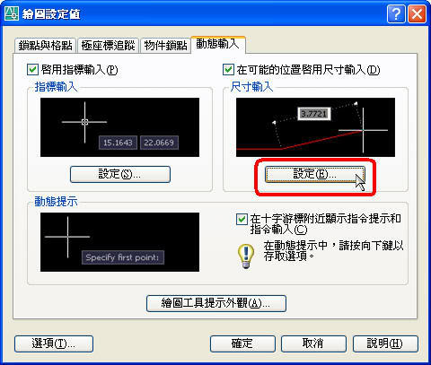
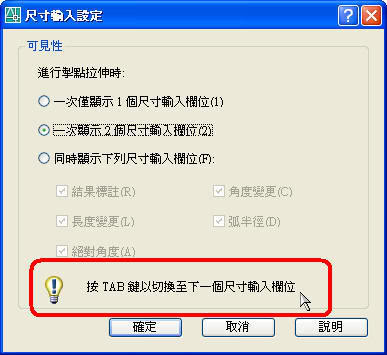
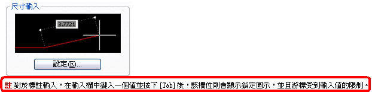

想請問CAD的高手我用的是2008 LT版的
為什麼動態功能無法使用呢?
除了動態功能之外其餘的功能都正常
為什麼會這樣呢?
動態功能打開之後如果你要畫一條100長角度是30度
十字游標旁邊應該會有二個空格
一個輸入長度一個是要輸入角度的
可是我的CAD輸入了第一個數值之後
旁邊的那二個空格就會不見了
希望有CAD的高手能幫我解答
感激不盡^^
AutoCAD的功能非常完整，使用者可以依照自己的需求來設定，而在座標的輸入可以使用極座標或是動態輸入等等，而他們的使用方式各有優缺點，你可以多多練習並找到適合自己的作圖方式，以下動態輸入回答供你參考：
1.關於動態輸入的功能，預設操作方式為:先輸入長度，當輸入長度時如欲輸入 角度 請按 TAB鍵 以切換到下一個尺寸輸入，所以請先確認動態的設定欄位，如附圖。


2.設定無誤後，請輸入「LINE指令」→「圖面指定第一點」→「長度輸入 100」→「按 TAB鍵」切換到角度輸入→ 「角度輸入 30」...即可完成一條100長角度是30度的線斷。
動態操作如下，有問題請再提出討論喔~
※以下資料來源： AutoCAD 2006 使用者說明文件
------------------------------------------
動態輸入可在游標附近提供一個指令介面，以協助您專注於繪圖區。
當動態輸入打開時，工具提示會在游標附近顯示資訊，並隨著游標的移動而動態更新顯示的資訊。 當指令處於作用中時，工具提示會為使用者提供用於輸入地方。
完成指令或使用掣點所需的動作，類似於指令行所需的動作。 差別是您可將注意力停留在游標附近。
按一下狀態列上的「DYN」，以開啟或關閉動態輸入。 按住 [F12] 鍵，您可以暫時將其關閉。 動態輸入具有三個元件：指標輸入、標註輸入和動態提示。 以滑鼠右鍵按一下「Dyn」，並按一下「設定」，以控制「動態輸入」開啟時每個元件顯示的內容。
